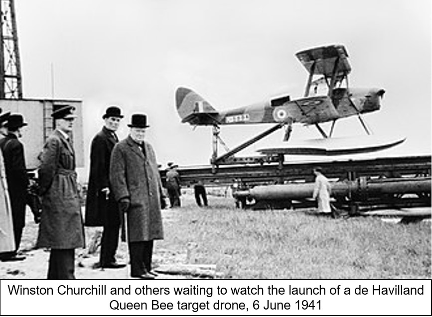
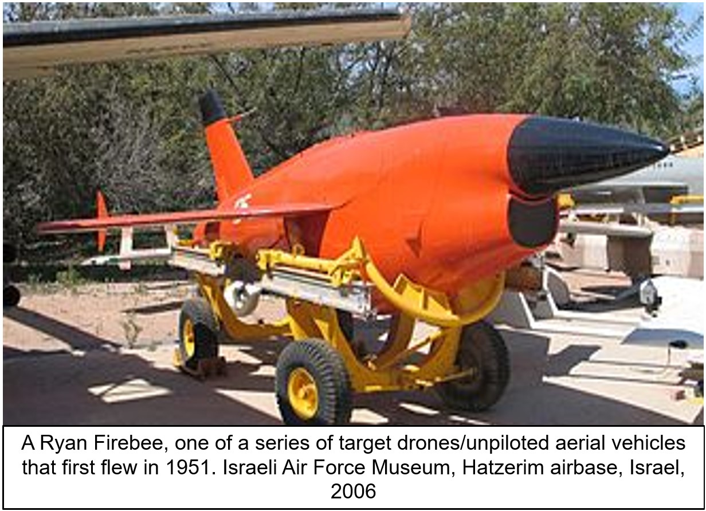
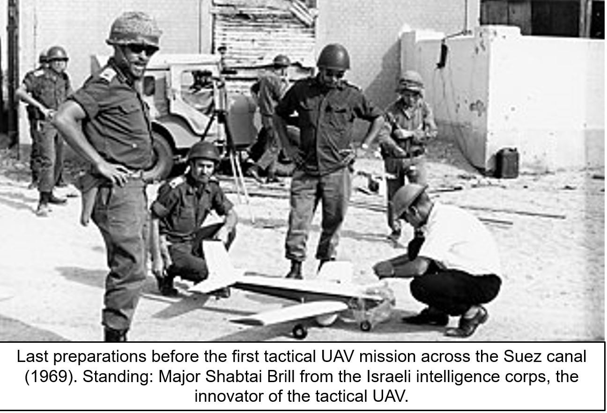
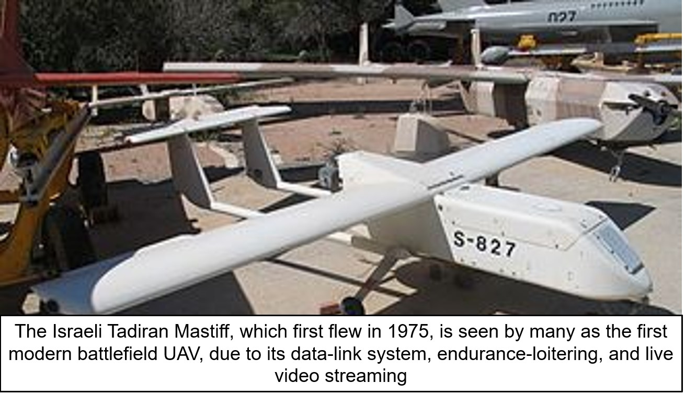
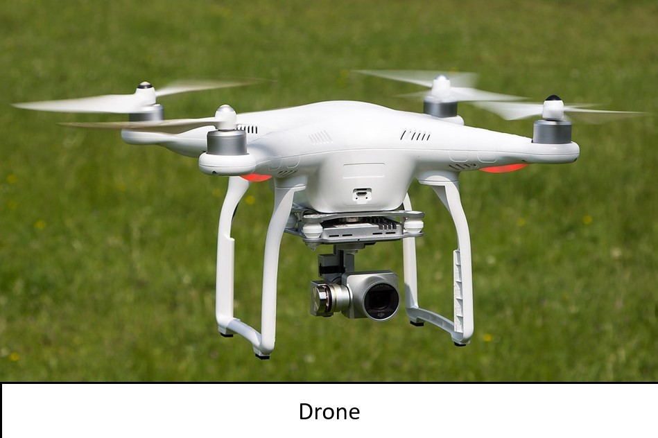

The earliest recorded use of an unmanned aerial vehicle for warfighting occurred in July 1849, serving as a balloon carrier (the precursor to the aircraft carrier) in the first offensive use of air power in naval aviation. Austrian forces besieging Venice attempted to launch some 200 incendiary balloons at the besieged city. The balloons were launched mainly from land; however, some were also launched from the Austrian ship SMS Vulcano. At least one bomb fell in the city; however, due to the wind changing after launch, most of the balloons missed their target, and some drifted back over Austrian lines and the launching ship Vulcano.
Significant development of drones started in the early 1900s, and originally focused on providing practice targets for training military personnel. The earliest attempt at a powered UAV was A. M. Low's "Aerial Target" in 1916. Low confirmed that Geoffrey de Havilland’s monoplane was the one that flew under control on 21 March 1917 using his radio system. Other British unmanned developments followed during and after World War I leading to the fleet of over 400 de Havilland 82 Queen Bee aerial targets that went into service in 1935.
Nikola Tesla described a fleet of uncrewed aerial combat vehicles in 1915. These developments also inspired the construction of the Kettering Bug by Charles Kettering from Dayton, Ohio and the Hewitt-Sperry Automatic Airplane . Initially meant as an uncrewed plane that would carry an explosive payload to a predetermined target. The first scaled remote piloted vehicle was developed by film star and model-airplane enthusiast Reginald Denny in 1935.
Of course, UAVs are also an increasingly important part of the military in many countries. American armed forces alone have a fleet of tens of thousands of drones today, compared to just a few twenty years ago. This is dwarved, however, by the number of drones in private use. According to the FAA, there were 1.1 million drones registered in the U.S. in 2019.
World War II

Development continued during World War I, when the Dayton-Wright Airplane Company invented a pilotless aerial torpedo that would explode at a preset time. In 1940 Denny started the Radioplane Company and more models emerged during World War II – used both to train antiaircraft gunners and to fly attack missions.
Nazi Germany produced and used various UAV aircraft during the war, like the Argus As 292 and the V-1 flying bomb with a jet engine. After World War II the development continued in vehicles such as the American JB-4 (using television/radio-command guidance), the Australian GAF Jindivik and Teledyne Ryan Firebee I of 1951, while companies like Beechcraft offered their Model 1001 for the U.S. Navy in 1955. Nevertheless, they were little more than remote-controlled airplanes until the Vietnam War.
Postwar period

Development continued during World War I, when the Dayton-Wright Airplane Company invented a pilotless aerial torpedo that would explode at a preset time. In 1940 Denny started the Radioplane Company and more models emerged during World War II – used both to train antiaircraft gunners and to fly attack missions.
Nazi Germany produced and used various UAV aircraft during the war, like the Argus As 292 and the V-1 flying bomb with a jet engine. After World War II the development continued in vehicles such as the American JB-4 (using television/radio-command guidance), the Australian GAF Jindivik and Teledyne Ryan Firebee I of 1951, while companies like Beechcraft offered their Model 1001 for the U.S. Navy in 1955. Nevertheless, they were little more than remote-controlled airplanes until the Vietnam War.
Modern UAVs

With the maturing and miniaturization of applicable technologies in the 1980s and 1990s, interest in UAVs grew within the higher echelons of the U.S. military. In the 1990s, the U.S. DoD gave a contract to AAI Corporation along with Israeli company Malat. The U.S. Navy bought the AAI Pioneer UAV that AAI and Malat developed jointly. Many of these UAVs saw service in the 1991 Gulf War. UAVs demonstrated the possibility of cheaper, more capable fighting machines, deployable without risk to aircrews. Initial generations primarily involved surveillance aircraft, but some carried armaments, such as the General Atomics MQ-1 Predator, that launched AGM-114 Hellfire air-to-ground missiles.
CAPECON was a European Union project to develop UAVs, running from 1 May 2002 to 31 December 2005.
As of 2012, the USAF employed 7,494 UAVs – almost one in three USAF aircraft. The Central Intelligence Agency also operated UAVs. By 2013 at least 50 countries used UAVs. China, Iran, Israel, Pakistan, Turkey, and others designed and built their own varieties. The use of drones has continued to increase. Due to their wide proliferation, no comprehensive list of UAV systems exists.
The development of smart technologies and improved electrical power systems led to a parallel increase in the use of drones for consumer and general aviation activities. As of 2021, quadcopter drones exemplify the widespread popularity of hobby radio-controlled aircraft and toys, however the use of UAVs in commercial and general aviation is limited by a lack of autonomy and new regulatory environments which require line-of-sight contact with the pilot.
In 2020 a Kargu 2 drone hunted down and attacked a human target in Libya, according to a report from the UN Security Council’s Panel of Experts on Libya, published in March 2021. This may have been the first time an autonomous killer robot armed with lethal weaponry attacked human beings.